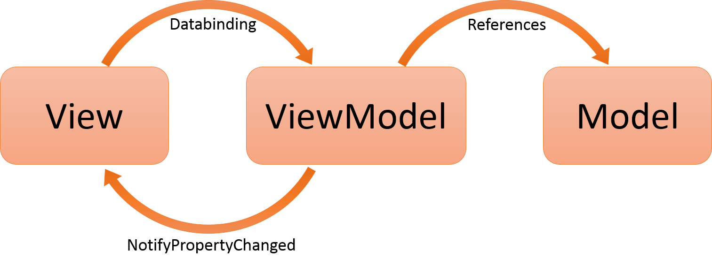

A Brief History
ofThe Internet
*for Project Managers *and BargWeb 1.0
Web 2.0

Real time
Server Side

Rails 
- Convention over Configuration
- Full Stack Framework
- Ruby Based
- Request Response Client Server Model
Node 
- Low Level protocol based on Chromes V8 Engine
- Not Full Stack - Express usually added
- Javascript Based
- Non-blocking + sockets = CRAZY FAST
- Puts the "N" in "MEAN"
- Connfiguration over Convention
Client Side


- The orange among apples
- A javascript library
- Simplifies Client Side Scripting
- Pros:
- Light weight
- Cons:
- Not a framework
- Turns into spaghetti at midnight
- Pulls the model out of the DOM
- Pros:
- Very light weight < 6KB
- Fewer concepts to grasp
- Cons:
- No data binding
- Less feature rich than other frameworks
- Convention over configuration
- Pros:
- Conventions lead to consistent code
- Data Binding
- Cons:
- Steep learning curve
- Frequent API changes

- Makes browsers smarter
- Pros:
- Two-way data binding
- Custom HTML tags/attributes
- Designer friendly
- Cons:
- Many ways to do one thing
- No Manual DOM manipulation